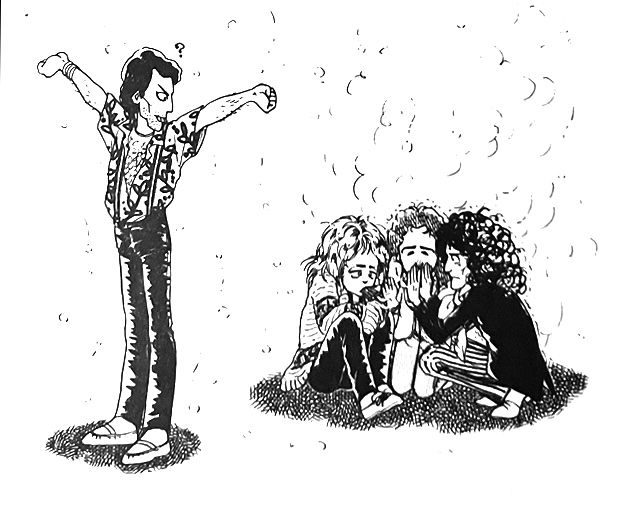
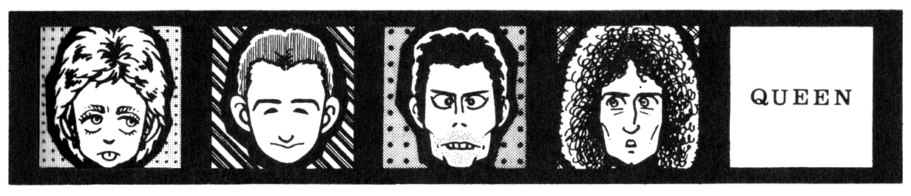
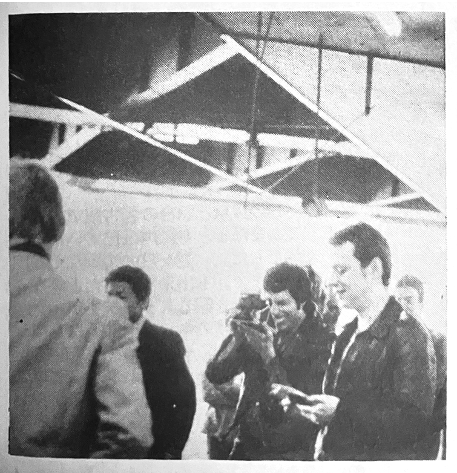

Queen's showing in Japan of 1979 wasn't their brightest moment, I'm afraid. Their visits to Japan in '75 and '76 had a cult-like showing, but now they were beginning to make a fuss within the greater rock world. By 1979 they had been upgraded and were respected by the common rock'n'roll fan. We Are the Champions had risen straight to the top in America, more and more men were starting to mix in with the teenyboppers who had made up the majority of their Japanese fanbase previously, and they had become highly-respected artists. This made the stakes of their Japanese '79 tour feel quite high and this should've been a crucial moment in their touring. But unfortunately, Freddie was sick and showed up in terrible condition. Especially on the last day in Tokyo, where TV cameras had been set up to broadcast the action... this was the perfect chance for the band to make their essence known to the common man, but on that night of all nights Freddie was staggering around onstage with a 39ªC fever, his voice completely gave out, and on top of everything he took an ungraceful tumble while onstage. Of course the people who watched this show on TV at home were unaware of the situation, and were probably wondering if this was really that band that everyone had made such a fuss about. Even now I feel bad just thinking about it, but there was nothing for it. (Mercifully, the TV cameras didn't capture Freddie's tumble.)

by Hideko
I was able to attend on the 14th in Tokyo and the 28th in Nagoya. As the 14th was only the second day, Freddie's voice was still in decent shape, but he sounded miserable in Nagoya. I was told that the next day in Fukuoka, he didn't speak all day until just before taking the stage. Even so, Freddie strutted around that stage for the full two hours, his voltage never dropping, and all performances were held without a single cancellation. It's almost scary how much guts that guy had. Even though his voice was gone, he had more than enough power to make up for it. That isn't just the rose-tinted glasses of a fan, either... that there are still so many Queen fans around in the rock musician world today is a testament to this.
An anecdote: Brian attempted to memorize a new MC in Japanese for this tour. On the 14th he dropped his techniques on us: "THANK YOU SO MUCH!" That much was fine. Then he happily clapped his hands and shouted, "CAN YOU HEAR US ALL JIGHT?!" ["ヨクキコエマスキー?" I tried to make it sound as ridiculous in English.] There was uproarious laughter inside the auditorium. The poor guy didn't understand what everyone was laughing at. By the time the Nagoya show rolled around on the 28th, someone had apparently corrected him and he had fixed it. "CAN YOU HEAR US ALL RIGHT?" got big cheers that night, then he replied, "GREAT!!" He probably also wanted to say "GREAT!" on the 14th, but since he got laughter he didn't say it. Every time poor Bri comes to Japan he does something embarrassing.

Queen in Japan, April 20th, 1979
by Gu-minor

The overarching feeling in Osaka Jo Hall on the 20th was approaching something like fear, and it pressed down on me to the point where I almost wanted to run out of there. It took all of my courage to cling to the chair. Inside the hall before the show, quite an atmosphere was swirling amongst the fans, a now-or-never feeling. Everyone was clapping and just as it felt like everything was about to flash over, at around 6:57 PM, the forms of the band members on the previously dark stage were revealed. Roger's heavy drum began to beat out that We Will Rock You beat we all know so well, and the cheers, screams, and applause shook the whole venue. One single spotlight lit up the left side of the stage, revealing Freddie's supple form. Then, as the lead guitar began, another spotlight lit up the right side, revealing Brian. To further cheers and applause, the spotlights sequentially came on, bathing all four of them in brilliant, beautiful light. The tempo moved into the fast version of the song and thus began the magnificent drama of Queen.
Some impressions of the remainder of the show are as follows. During the medley of Death on Two Legs, Freddie smacked his own butt like a monkey when he said "But now you can kiss my ass goodbye". At one point, Brian, looking anxious, set his guitar down, anxiously went over to Freddie on the piano, anxiously said something to him, and then anxiously sat down at the piano and began to play himself! And what could that song be? Nothing other than te wo toriatte! (For the first time ever, by the way!) At Freddie's urging, the whole venue repeated the Japanese chorus three times! I'll never forget the look of relief on Brian's face once he was done on the piano. But nothing in my mind could top the memory of the two encores... first, Roger came out, drank an entire can of beer in one mouthful and spit it onto his drums, spraying suds everywhere with his drumming. We Will Rock You began and then Freddie came out on the shoulders of Superman, in teeny little silver sequined shorts! (We called these shorts "the silver scales" and when he wore the red ones we called him "the Goldfish".) Even though it looked as though Freddie could easily fall, John unexpectedly stuck the neck of his bass in between Superman's legs and poked around. Hmm, I guess John is that sort of guy...
After that they did Champions, which caused the venue to boil over with excitement, and as they exited to God Save the Queen, Roger smashed a chair (no wonder he looks so fit!). Brian showered us with affection for quite a while (with the spirit of an entertainer!) and John kept smiling broadly and bowed. Freddie left without doing much of anything. Pff! Even so, I was so moved and full of excitement, I had trouble sleeping that night after I went home.